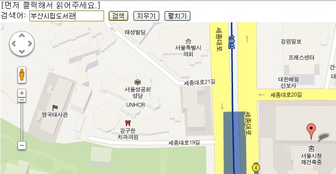
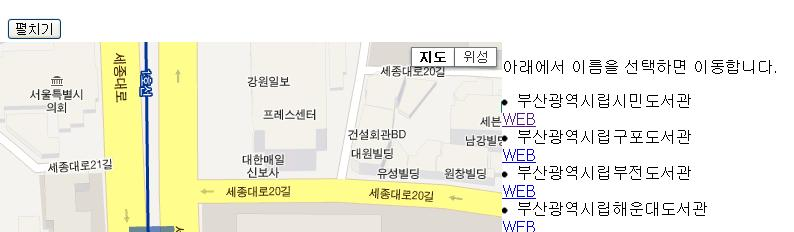
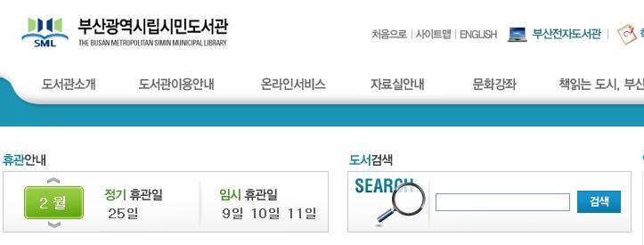
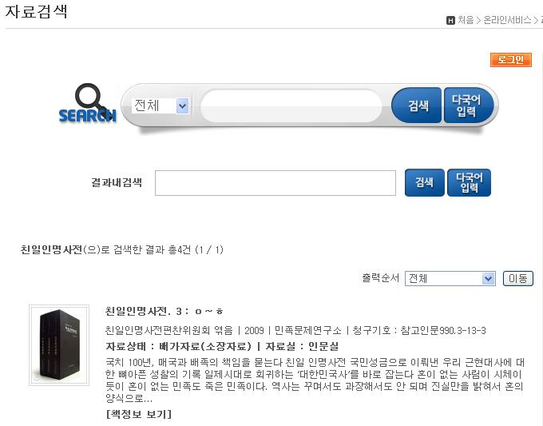
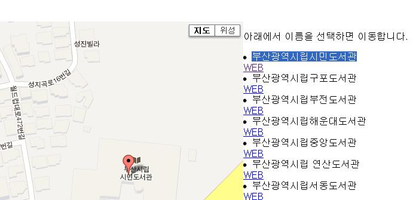
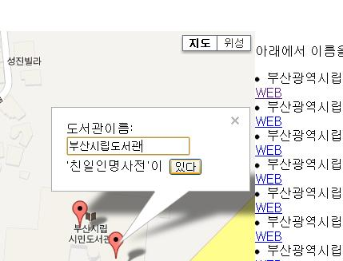
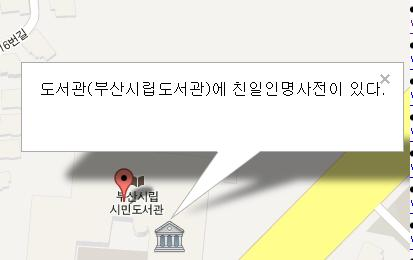

-
첫 화면은 현재 위치 주변을 보여줍니다. 주변에 도서관이 없다면 가보거나 가본 도서관을 검색해보세요. "부산시립도서관"을 검색어 넣고 "검색" 버튼을 누릅니다.

-
"검색" 버튼을 누르면 오른쪽에 검색 결과가 목록으로 나타납니다. 그중에서 "WEB" 링크를 클릭하면 해당 도서관의 웹사이트로 이동할 수 있습니다.

-
"부산광역시시립시민도서관"의 웹사이트로 이동하였습니다.

-
"친일인명사전"을 검색해보면 소장하고 있는지 알 수 있습니다.

-
지도 화면으로 돌아가서 검색 결과 목록 중에서 하나를 클릭하면 지도에서 위치를 이동합니다.

-
마우스로 클릭하면 마커가 하나 더 생기고 "도서관 이름"을 입력할 수 있습니다.

-
입력한 후 마커 이미지가 도서관으로 바뀌었습니다. 마커를 클릭하면 도서관 이름이 나타났습니다.
